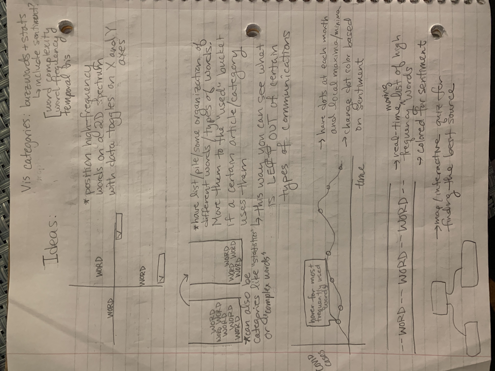

COVID Communications Project Proposal
Basic Info
Covid Communications
Ben Tzudiker, 457993, bentzudiker@wustl.edu
Claire McShane, 464850, cemcshane@wustl.edu
Emma Baker, 450470, emma.baker@wustl.edu
https://github.com/cemcshane/covid-communication
Background and Motivation
We are interested in studying the use of language in public-facing spheres as it relates to COVID-19 communications. Whether it be from elected officials, journalists or other sources there is an intended audience which defines the posture of the writer or speaker. We want to study the sentiment analysis of these different perspectives to get a greater understanding of how the texture of language itself can define how information is disseminated and received.
With COVID-19 as an active public health crisis in the United States, we thought there would be a bounty of data to study and learn from. Instead of opting for exclusively quantitative data, however, we discussed the non-traditional ways public health is enforced, like through speech. Acute to this class, the three of us all approached the third assignment with sentiment analysis or related goals and we wanted to continue on that path for this final project. We also felt the baseline of this approach would be flexibility enough so as to draw on any number of scopes.
Project Objectives
A tool that allows users to compare the language around COVID-19 by geographic scope, profession, date, and intended audience.
Sample framing questions:
- How does the language of X politician compare from March 2020 to November 2020
- How does a layman’s language differ from an expert’s
- How does information compare when intended for a general audience versus a medical audience
- How do local politicians discuss COVID against federally elected/serving government officials
- Regionally, how is information shared to a general audience for news consumption?
- How does language relate to COVID cases
Data
As the project develops, we’ll decide whether or not we want to rely more on manually entered transcripts or on APIs. Since this is just meant to give an overview of each source’s discussions of COVID, it’s not necessary to include every piece of communication as long as the samples are representative (although more is of course nice).
Manual Entry:
- Presidential addresses and other white house correspondence transcripts are available publicly online
- Same as above for news
- Some scientific journals about COVID are freely available online as pdfs
- Finding public correspondence from experts will probably be more challenging - one option is to manually scour other sources for interviews with doctors/scientists
APIs/Comprehensive Data Sets:
Data Processing
Accumulating and processing the data will probably be a large part of the project. We assume there won’t be APIs for everything we want, so we’re going to need to manually collect text samples from various sources. This will take some legwork, but we also have APIs and we’re just looking for a representative sample - it shouldn’t matter much if we don’t have an enormous wealth of data. Manually entered data will need manually entered metadata for our filtering. This metadata will include (when applicable/available) date published, location, who said it (probably broken up into categories like news anchor, politician, doctor, scientist), and so on. We’ll also need to write code to find this metadata in any data gathered live from an API. Depending on what analysis we decide to do, we might also want to remove articles and other junk words. Once we have the data, we need some way to quantify it. The spellchecking/word complexity data sets include several useful metrics, but we might also want to design COVID-specific ones (for example, how often does “vaccine,” “mask,” “school,” or a synonym of “hoax” appear?). Two of our group members did something similar to this for assignment 3, and the third has other experience with language processing. We also want to leverage other peoples’ work as much as possible, so we’ll probably also use a sentiment analysis library (or something similar) to get useful quantitative data from the text.
Visualization Design
Brainstorming:

In order to organize our thoughts, we started by listing out the variables we'd potentially like to work
with. After this, it became clear that there were two main approaches: create one main visualization with
lots of toggle options, or create several smaller visualizations. The design challenge of this project was
to find a middle ground where the user would not be overwhelmed by the large amounts of data.
Initial Designs:
Each of the inital designs seemed to naturally build off of each other rather than being completely distinct. The design took on three stages:
Design 1:
- Observed how multiple independent visualizations would look on a page.
- Visualizations:
- Hoverable graph of COVID cases over time that could display the most commonly used words during different time periods.
- Generic scatter plot that would let the user pick two variables for the x- and y-axes. The plotted points would be media sources.
- A general "grab bag" of buzz words and concepts that are often used in COVID communication. A user would select a category
(e.g. left-leaning articles) and see which words/concepts communicators most often would choose from the "grab bag." This allows users
to see information that is typically left out in addition to what is used.
Design 2:
- Started to experiment with connected visualizations and focused more on side-by-side comparisons.
- Visualizations:
- COVID case graph in this design serves more as a tool to adjust the main visualization, and does not do any text analysis in itself.
- Word map uses high-frequency words from a selected category (e.g. medical journals, local news articles) and connects them to words often used in their proximity
(whether that is in the same sentence or same article is TBD). Stronger connections would be displayed as either bolder or shorter lines and higher-frequency words as bolder nodes.
The user would then be able to drag the map across the line barrier to see a new selected category. The words NOT used by the new category would drop to the corner of the original box.
This would highlight differences between the two categories.
- Two generic bar charts undernear the focal point visualization provide additional information about the average conciseness and complexity of the language used in those categories.
Conciseness would be measured as a ratio of verbs:adjectives and complexity would require an outside dataset (mentioned in the Data section).
Design 3:
- Increased interactivity and interdependence of visualizations.
- Visualizations:
- Top COVID case graph still allows users to change visualization data, but also includes on-hover tooltips.
- Word map (see Design 2). The only difference here would be an additional feature to click on words to render the third visualization.
- Sentiment analysis graph of the use of a particular word (selected from the word map) over time.
Realization Design:
Features:
- COVID case graph still functions as way to manipulate word map as well as having some additional info on hover.
- Category selection becomes more of a focal point within its own block of the page rather than within the word map boxes.
-
Word map (same as Design 3). However, this map will include a grayed-out "ghost" of the previous map after it is dragged
across the barrier.
-
Sentiment map based on selected word similar to Design 3, except it is compatible with two separate categories for comparison.
Each category's graph can be toggled on/off for clarity as well.
Design Justification:
Our design is meant to shed light on how COVID communication differs across various audiences, platforms, and communicators. During the current
pandemic, trillions of sources reach the general public. This visualization should allow users to unpack the undertones and objectives of this surplus of information
in order to detect biases and find what is most reliable and relevant.
-
We wanted to emphasize how communication shifted over time, as a result of spikes in cases or times of relative calm, to reveal different sources' underlying motivations.
By placing our timeline at the very top of the page, this emphasizes to users that time plays a large part.
-
In Design 2, we decided to emphasize comparison between source categories, so the final design made the selection of categories to compare more of a focal point. This also makes it clearer
to the user that both the word maps AND sentiment graph would be using those category selections.
-
For means of comparison, we wanted to depict which words certain sources did not include compared to others. However, the lines linking the words in the map also change from
category to category. Knowing this, we decided to incorporate a "ghost map" in each visualization box so users could also compare how word connections differed between sources.
The "fit block into X-shaped hole" children's toy inspired this approach. Whenever the map was dragged across the barrier, users could see what information was pruned/readjusted in
order to resemble the ghost map of the other category.
-
In order to give users flexibility to either observe more general trends or dive into more specific information, we made the word map serve as a way of selecting values for the sentiment graph.
This seemed less overwhelming to the user and made the visualization appear more cohesive than disjointed.
-
Continuing with the side-by-side comparison theme, we adjusted the sentiment map to display two categories at once and toggle the display. This provides more insight into how
different source categories handled similar scenarios over time.
Must-Have Features
- The ability to compare at least two reference texts from different sources side by side
- At least three forms of analysis offered for the comparison (sentiment analysis, word frequency, etc.)
- Texts ranging from just before COVID-19 was declared a pandemic to present for accuracy
- Data reflecting the voices of: elected officials, journalists, health professionals to have a range of intended audiences
Optional Features
- Integration of a news API to provide up-to-date analysis
- Filter data first by keywords or other data tags to refine comparisons
- Allow for users to compare multiple documents by multiple focuses/categories
- Allow for users to extrapolate analysis from particular selection(s) of a text(s)
Project Schedule
November 15-21
- Define small data set and perform analysis testing
- Generate sample visualizations from dataset
- Start data acquisition & tag texts
November 22-28
- Finishing data acquisition & tag texts
- Drafting designs and sketch layout of site
- Make data visualization extensible for different texts
- Integrate further sentiment analysis/on-call comparisons
November 29-December 5
- Finish basic components of data analysis and visualization
- Integrate all data streams into analysis tools and render visuals
December 6-12
- Catch up week for blockers or final aspects of basic components
- Refine UI and integrate data analysis/impact from visualizations
December 13-19
- Refine website and polish basic components of project
- Get feedback from professors and begin work on additional features